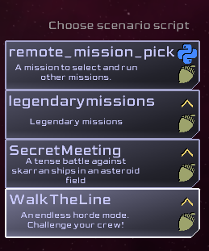
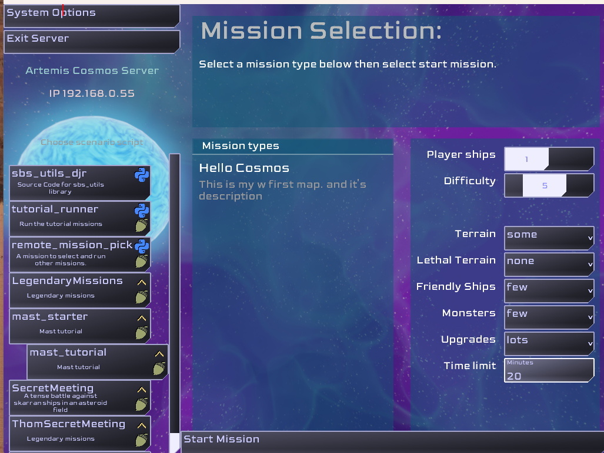
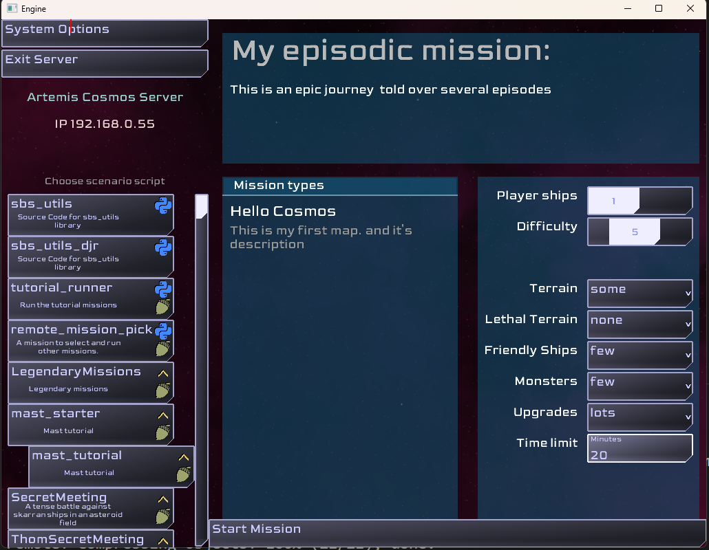

Tutorial
This tutorial builds a small mission for Artemis: Cosmos. It walks through the folder structure and files a mission needs, then adds content step by step. It uses the sbs_utils library and the MAST scripting language.
The result is a smaller version of the Siege scenario from Legendary Missions. It reuses a lot of code from the add-ons that ship with the game.
Mission structure
A mission in Artemis: Cosmos is a folder, not a single file — it takes several files, and MAST adds a couple more. Once the file structure is in place you can start writing MAST scripts.
Required files
At minimum, a mission needs:
script.pydescription.yaml
description.yaml provides the information shown in the mission select list:
format version: 1
Category: Standard
Visible Mission Name: My Mission Name
Description: A short description of the mission.
Older missions used
description.txt(still supported). New missions should usedescription.yaml.

script.py is how the Artemis: Cosmos engine talks to the scripting system: the engine
calls cosmos_event_handler with each engine event.
def cosmos_event_handler(sim, event):
pass
You can write an entire mission in Python this way — but that means handling every engine event yourself. Libraries like sbs_utils provide reusable systems so you can focus on the mission instead. (sbs_utils can be used without MAST, and provides plenty of lower-level systems if you prefer Python.)
Files a MAST mission adds
A MAST mission needs a couple more files:
description.yaml(as above)script.py(a small, standard boilerplate version)story.mast— your mission scriptstory.json— the libraries and add-ons the mission depends on
Start from an existing mission's
script.py.
It loads sbs_utils, provides a default cosmos_event_handler, bootstraps the
MAST runtime by running story.mast, and installs a top-level exception
handler so a script error doesn't crash the game. You won't usually need to change
it.
story.mast is where your mission script lives. (Later we'll move most of the
code into its own folder.)
story.json lists the libraries and add-ons the mission depends on. Every MAST
mission needs at least sbs_utils; most also use the core add-ons from Legendary
Missions. Copying Secret Meeting's
story.json is
a good start.
Creating a map
A mission needs content. The library and add-ons present a list of maps to pick from; maps are discovered at runtime by finding a map label.
A map label starts with @map/ followed by an identifier, and (like other route
labels) uses / to separate parts of the identifier. It also has a display name
— the text the crew sees on the selection screen — and, optionally,
description lines that each start with a ":
@map/first_map "Hello Cosmos"
" This is my first map
" and its description
Optional files
README.mdsetup.json
README.md should describe the mission; on GitHub it's shown on the repository
page.
GitHub is a place to manage source code
GitHub is used by many software developers. Artemis: Cosmos can fetch missions from GitHub with a single command. Using GitHub is encouraged for its version control and as a simple home for downloadable content — missions, libraries, add-ons, and mods.
Finished: step one — first map
Running this should show the map "Hello Cosmos" in the mission selection screen.

The finished code for this step: step-01.
Splitting a mission into modules
Missions grow. Keeping everything in story.mast doesn't scale well.
On startup the MAST runtime runs story.mast, then discovers and loads
modules. A module is a folder with an __init__.mast file plus any other
.mast or .py files; a file is included only if __init__.mast imports it.
(See the SecretMaps folder
in Secret Meeting.)
Let's move the map into a module:
- create a folder in the mission called
maps - add an
__init__.mastfile - add one or more
.mast/.pyfiles - move the map code from
story.mastintomaps/map.mast - import it from
__init__.mast
maps/__init__.mast:
import map.mast
maps/map.mast:
@map/first_map "Hello Cosmos"
" This is my first map
" and its description
story.mast can now be empty, but keep the file — the system expects it, and
you may add code to it later.
Finished: step two — modular map
The finished code for this step: step-02.
Multiple maps and a mission overview
You can create several map labels; each is discovered and offered in the mission selection carousel.
You can also set the mission overview (the title and description at the top of
the selection screen) with the special @map/__overview__ label:
@map/__overview__ "My episodic mission"
" This is an epic journey
" told over several episodes
Running the mission now shows the overview as well as the first map.

Finished: step three — overview
The finished code for this step: step-03.
Modules, add-ons, and libraries
The maps folder you created is a module. A mission can have several modules,
each in its own folder.
A module folder may contain subfolders, but files in subfolders are not
discovered automatically — import them from the module's __init__.mast.
A module can be packaged as an add-on: a zip of the module folder, with the
extension renamed from .zip to .mastlib. The __lib__ folder next to the
Artemis: Cosmos missions folder holds the Legendary Missions modules as add-ons.
__lib__ also holds Python libraries — .sbslib files, which are just
zips of Python modules. (Python has its own packaging systems; .sbslib is a
simplified scheme chosen for sharing code in Artemis: Cosmos.)
Add-ons and libraries are not discovered automatically. List each dependency in
story.json,
which has a section for sbslib files and one for mastlib files. The full file
name (including extension) is listed, so you can use any extension — e.g.
.zip while developing and testing your own add-on.
Add-ons are a handy way to share partial missions — Gamemaster/Admiral comm commands, for example.
The libraries and add-ons that ship with Artemis: Cosmos follow a naming scheme that includes the GitHub user, repository name, and a version, which helps avoid name clashes and version mismatches.
Adding map content
To fill out the map, spawn stations and NPC ships. You can do this with low-level functions (see the spawn module), but this tutorial uses a few helper functions from the add-ons.
Stations
terrain_spawn_stations spreads stations across the map. Pass the DIFFICULTY
level and a lethal-terrain value: higher difficulty spawns fewer stations, and the
lethal-terrain value controls how many mines surround each station.
terrain_spawn_stations(5, 2)
Player ships
Schedule the add-on label that spawns and positions the player ships, and wait for it to finish:
await task_schedule(spawn_players)
Enemies
prefab_spawn creates one or more objects from a prefab label.
prefab_fleet_raider builds an enemy fleet; pass a race, a difficulty (0–10),
and a position. This spawns ten fleets at random points on a ring around the
origin:
for a in range(10):
fleet_pos = Vec3.rand_in_sphere(39990, 40000, False, True)
prefab_spawn(prefab_fleet_raider, {
"race": "skaraan",
"fleet_difficulty": DIFFICULTY,
"START_X": fleet_pos.x,
"START_Y": fleet_pos.y,
"START_Z": fleet_pos.z,
})
End-game conditions
The simplest way to define win/lose conditions is game_end_condition_add: pass a
promise, a result message, and True for a win or False for a loss. Conditions
are checked every tick, and the first one that becomes true ends the game.
# Lose if all players are destroyed
game_end_condition_add(destroyed_all(role("__player__")), "All ships lost.", False)
# Lose if all stations are destroyed
game_end_condition_add(destroyed_all(role("station")), "Station destroyed.", False)
# Win if all enemies are destroyed
game_end_condition_add(destroyed_all(role("raider")), "Victory! All enemies defeated.", True)
destroyed_all,destroyed_any,distance_less, anddistance_point_lessreturn promise objects suitable forgame_end_condition_add.is_timer_finishedreturns a plain bool and can't be used here.
For a fuller implementation with a mission timer and taunts, see the default end-game logic in Legendary Missions. It isn't packaged as an add-on, so copy it into your mission module.
Taunts may not work
Taunts currently require a taunt.json file in the mission; copy it from
Legendary Missions. This will be addressed in a future update.
Finished: step four — a simple game
That wraps up the getting-started tutorial — running the script should give you a playable game fighting off enemy fleets.
The finished code for this step: step-04.
More complete examples
Legendary Missions, Secret Meeting, and WalkTheLine have their own maps and make good references: